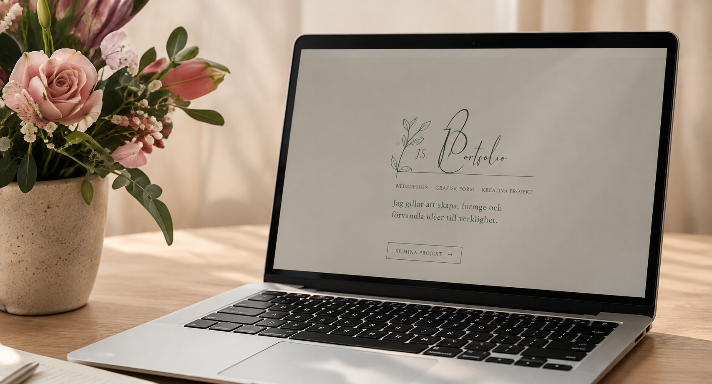

MINA PROJEKT
Utvalda projekt
Här hittar du mina projekt där jag kombinerar kreativitet, design och tekniska kunskaper inom webbutveckling.

EGET PROJEKT
Min portfolio
En personlig webbplats där jag visar upp mig själv, mina projekt och mina kunskaper.
Fler projekt kommer snart ...